One of the best features of R is its graphics capability. As far as flexibility and breadth, R graphics is unsurpassed (in my opinion). There are MANY functions in R that involve visualizing data. There are many examples online, but a nice site that has tons of graphics (and syntax!) is: http://www.r-graph-gallery.com/.
plot() FunctionA very useful graphics function is the plot() function. This function plots a two-dimensional pane with two arguments giving the x and y coordinates.
Let’s create a simple plot:
x<-seq(1,100,1) #create a vector with elements 1:100.
y<-seq(1,10,length.out=length(x)) # create a vector 1:10 with same length.
plot(x,y) #plot it.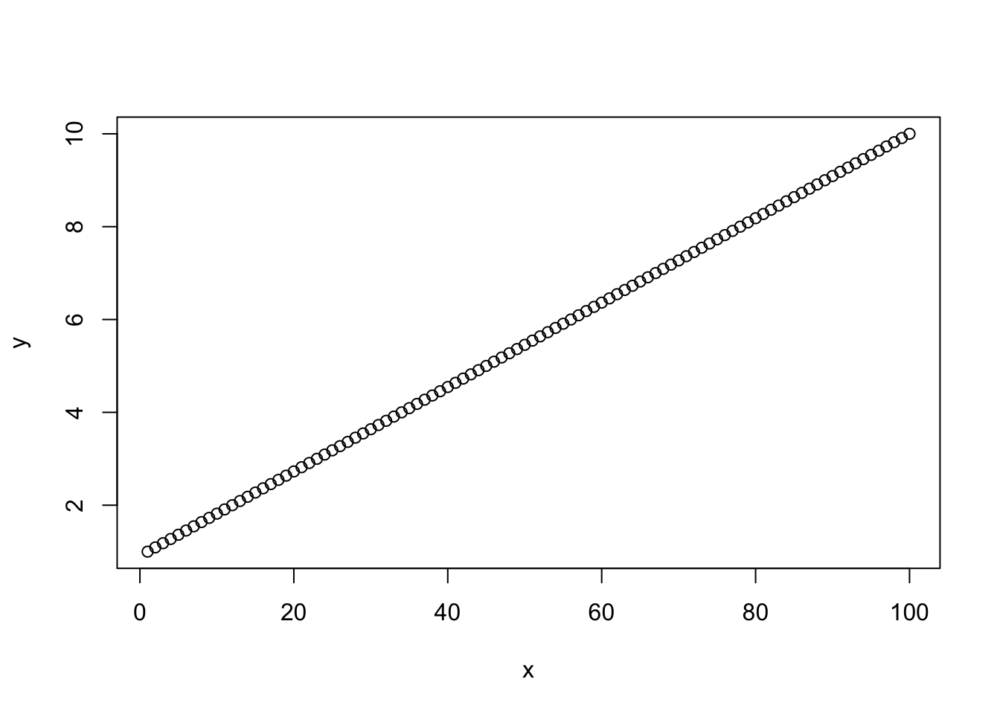
This is a pretty simple plot. As mentioned, one of the nice features of R is the flexibility to create your plot. Take a look at the different arguments that we pass to plot() to modify it by examining the help: ?plot.
There are many different parameters we can modify. For example, we can change the “type” of plot:
Or, we can change the “characters” of the plot:
plot(x,y,pch=1) #plot a point.
plot(x,y,pch=2) #plot a triangle.
plot(x,y,pch=3) #plot a +.
plot(x,y,pch=4) #plot an x.Often, when plotting multiple objects, we want to first set up the plot regions before adding anything. This is a plot of type “none”: plot(x,y,type="n").
There are many other changes we can make, for example:
plot(x,y,
type="n",
main="our sample plot", # plot a title.
xlab="this is the x axis", # change the x label.
ylab="this is the y axis" # change the y label.
)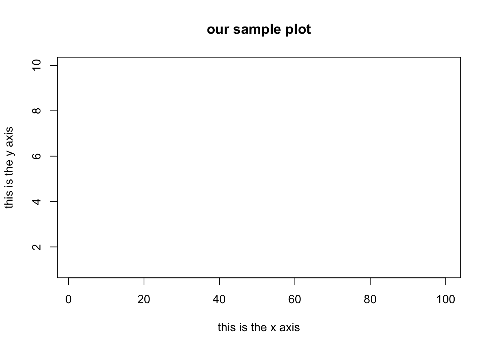
Additionally, the points(), lines(), segments(), and text() functions are useful for adding information to plots.
Here is an example I use in my data analysis course to illustrate the properties of the standard normal distribution.
y <- seq(-15,30,length=1000)
hx.1 <- dnorm(y,0,1) #get the densities to plot.
hx.2 <- dnorm(y,0,2)
hx.3 <- dnorm(y,0,7)
plot(y,hx.1,
xlab="",ylab="", # blank out the labels for x and y.
type="l", #make this a line that is plotted.
main="Normal Distributions", # a title.
col="blue", # color the line blue.
lwd=2 # change the width of the line.
)
# Now add the two othe lines.
lines(y,hx.2,col="red",type="l",lwd=2)
lines(y,hx.3,col="darkgreen",type="l",lwd=2)
# Add a line to show the central tendency.
segments(0,0,0,0.5,col="black",lwd=2)
# Add some text to show.
text(11,0.35,"Mean = 0, SD = 1",col="blue",cex=1.5)
text(12,0.15,"Mean = 0, SD = 2",col="red",cex=1.5)
text(13,0.06,"Mean = 0, SD = 3",col="darkgreen",cex=1.5)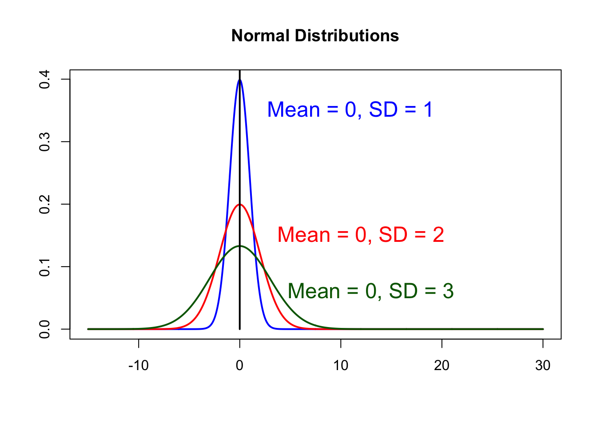
Here is another example I use in my course to illustrate bivariate regression. The data are yearly rates of family deaths recorded by a professor at Penn State. That is, the rate at which family deaths are reported to him prior to an exam from 1960-1995. Here are what the data look like in a table:
| Year | Death Rate |
|---|---|
| 1960 | 0.18 |
| 1965 | 0.20 |
| 1970 | 0.24 |
| 1975 | 0.30 |
| 1980 | 0.47 |
| 1985 | 0.61 |
| 1990 | 0.70 |
| 1995 | 0.90 |
Now, let’s move the data into objects to work with in R:
x<-c(1960,1965,1970,1975,1980,1985,1990,1995)
y<-c(0.18,0.20,0.24,0.30,0.47,0.61,0.70,0.90)
# Set up the plot.
plot(x, y,
xlim=c(min(x)-5,max(x)+5), # set x axis limits.
ylim=c(min(y)-0.5, max(y)+0.5), # same for y axis.
main="Plot of Average Family Deaths by Year", # title.
xlab="Year", # x axis label.
ylab="Average Family Deaths", # same for y axis.
pch=19 # define the plotting character.
)
# Add the least-squares regression line to the plot.
abline(lm(y~x),lty=2) #the function lm() is the linear model of y regressed on x.
# Add some more features.
points(mean(x),mean(y),col="black",pch=3,cex=3) # add some points to the plot.
abline(h=mean(y),lty=3) #plot the mean of y horizontally.
abline(v=mean(x),lty=3) #plot the mean of x vertically.
segments(1985,mean(y),1985,0.61,lwd=3,col="red")
text(1987.2,0.53,"y-ybar")
segments(mean(x),0.61,1985,0.61,lwd=3,col="red")
text(1981,0.65,"x-xbar")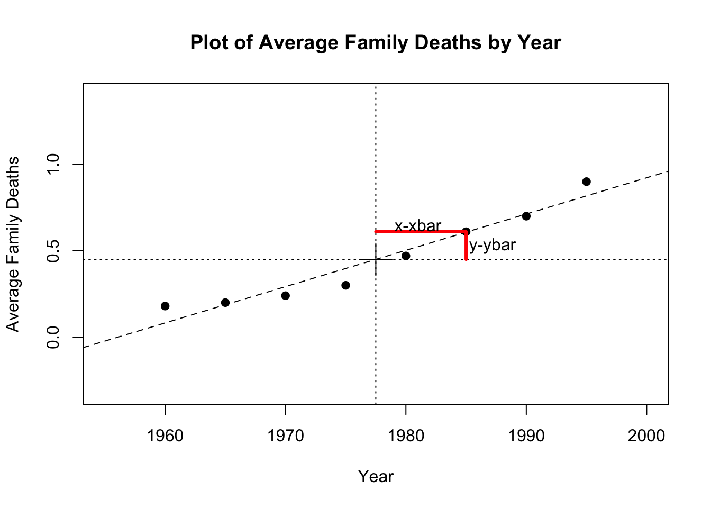
One of my biggest peeves about conference presentations (and some manuscripts [and especially job talks]) is bombarding an audience with tables full of numbers and asterisks. A simple (preferred?) approach is to plot point and interval estimates for model results.
If you prefer a “do-it yourself” approach, this is easy to do in R with the plot() function. For example, suppose we have estimated a model for the regression of delinquency on age, male, SES, delinquent peers, and school attachment. The OLS coefficients (standard errors) are:
| Variable | Estimate (Standard Error) |
|---|---|
| Age | 3.50 (1.10) |
| Male | 0.80 (0.22) |
| SES | 1.20 (0.81) |
| Del. Prs. | 0.70 (0.33) |
| Schl. Attch. | -0.60 (0.11) |
We could just enter the point estimates and standard errors as objects:
The upper and lower 95% confidence intervals are the point estimate +/- 1.96:
Now, we can plot the point estimates using points() and the intervals using segments(). For example:
n.coef = 5 # number of coefficients.
names = c("age","male","SES","Del Peers","Sch Attach") #coef names.
x.ax = seq(1,n.coef,length.out=n.coef) #dims of the x axis.
y.ax = seq(min(lower.ci),max(upper.ci),length.out=n.coef) #y axis.
plot(x.ax,
y.ax,
type="n", #do not plot anything yet.
ylab="coefficient w/ 95% CI", #label for y axis.
xlab="", #label for x axis .
xaxt="n" #toggle x axis labels (for now).
)
points(x.ax,point) # plot the point estimates.
segments(x.ax,upper.ci,x.ax,lower.ci) #now the intervals.
abline(h=0,lty=2) # add a line at zero.
axis(side=1,at=x.ax,labels=names) # add coefficient labels.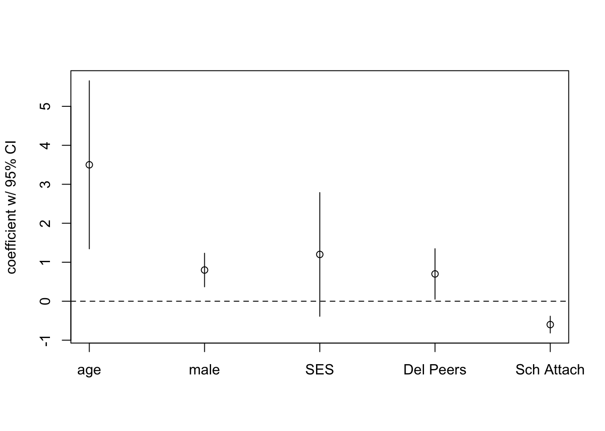
What does the plot tell us? This is beneficial for interpretation and only with 5 coefficients in the model. As the table gets bigger, the visualization of what the model is showing becomes more useful.
You could add more finesse to what we have already done, or you could employ the texreg package that plots model coefficients. Let’s check it out:
install.packages("texreg") #install the package.
library(texreg) #call the library to load the package functions.
help(package="texreg") #check out what the package can do.Let’s look at another example with much more parameter use. WARNING: SHAMELESS PLUG!!! This is a program to create a figure that I used in an article testing a theory of the relationship between age, violence, and social status. The article, entitled “Role Magnets’?: An Empirical Investigation of Popularity Trajectories for Life-Course Persistent Individuals During Adolescence”.
Here is the program:
#clear the workspace.
rm(list = ls())
#SET UP THE VALUES#
adl <- rnorm(1000,18,4)
age <- seq(5, 30,length.out=length(adl))
percent <- seq(0,100,length.out=length(adl))
mean <- 18
sd <- 5
adl <- seq(-4,4,length=100)*sd+mean
h.adl <- dnorm(adl,mean,sd)
#PLOTTING#
plot(
age, # make age the x axis.
percent, # make percent the y axis.
axes=F, # do not plot the axes.
main="",ylab="",xlab="", # toggle titles.
ylim=c(-0.5,100),xlim=c(5,30), # set limits.
type="n" #don’t plot anything yet.
)
#Set up the labels for the axes.
#note the use of the functions axis and mtext here.
axis(1,pretty(range(age),10))
mtext("Age",side=1,col="black",line=2)
axis(2,pretty(range(percent),10))
mtext("Prevalence of Antisocial Behavior (Percent)",side=2,col="black",line=2)
#Adolescent Limited.
par(new=T) # we want to add something new to the window pane.
plot(adl,h.adl,type="n",axes=F,main="",ylab="",xlab="",ylim=c(-0.01,0.1))
lines(adl,h.adl,lwd=2)
i <- adl >= 0 & adl <= 35
polygon(c(0,adl[i],35), c(0,h.adl[i],0),
density=5, col="grey70", angle=-45, border="transparent")
#Life-Course Persistent.
rect(-2,-0.05,38,0, density=20, col="grey80", angle=20 , border="transparent")
#Set up the text.
par(new=T)
plot(age,percent, axes=F,main="",ylab="",xlab="",
ylim=c(-0.5,100),xlim=c(5,45), type="n")
text(25,4,
"Life-Course \n Persistent",cex=1.2) #\n for hard return.
arrows( 33,3.5,45,3.5,length=.15)
segments(17,3.5, 5, 3.5)
text(25,45,
"Adolescence \n Limited" ,cex=1.2)
arrows( 15.5,20,34.5,20,length=.15)
arrows( 21.5,65,28.5,65,length=.15)
arrows( 18.5,40,31.5,40,length=.15)
text(10.7,36,
"Onset of Popularity Trajectory \n for Life-Course Persistent" ,cex=0.8)
arrows(10,31,12.5,12,length=.15)
text(23,90,
"Peak of Popularity for \n Life-Course Persistent" ,cex=0.9)
arrows(23,88,25,82,length=.15)
text(39.5,60,
"Decline of Popularity Trajectory \n for Life-Course Persistent" ,cex=0.8)
arrows(39.5,56.5,30.5,50,length=.15)
title(
"Figure 1. Hypothetical Illustration of the Prevalence \n of Antisocial Behavior",
sub="NOTE: arrow length represents duration of participation in antisocial behavior")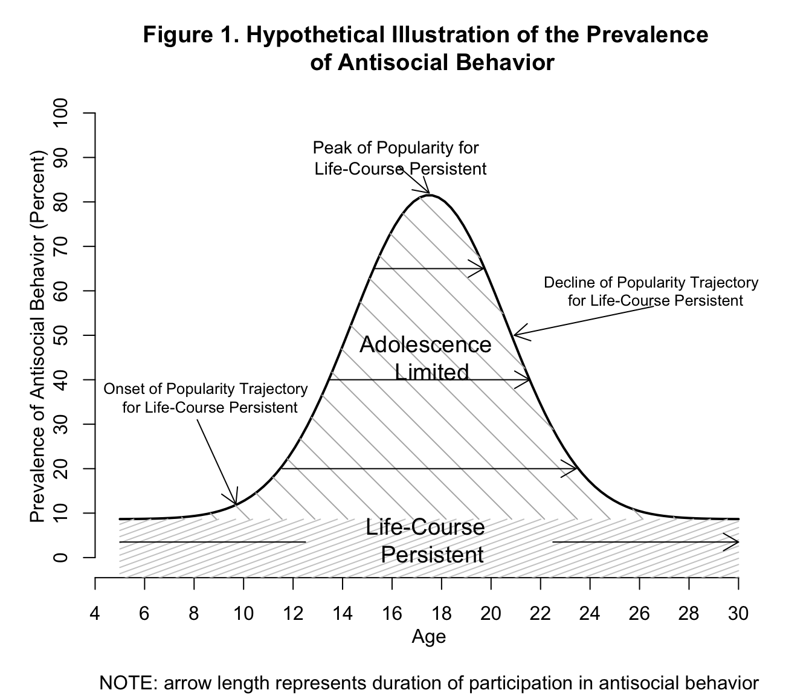
Another helpful function is the barplot() function.
We can give it a vector of heights for each of the bars:
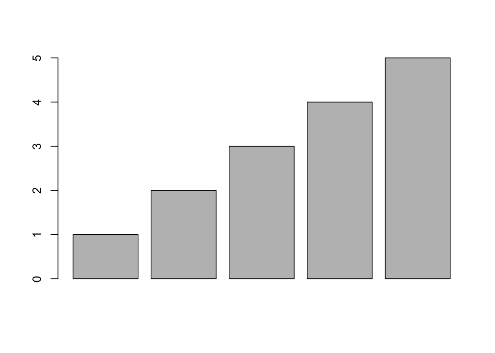
We can also add color, shading, titles, etc.:
barplot(c(1,2,3,4,5),
col=c(1,2,3,4,5),
names=c("Group 1", "Group2", "Group3", "Group4", "Group5")
)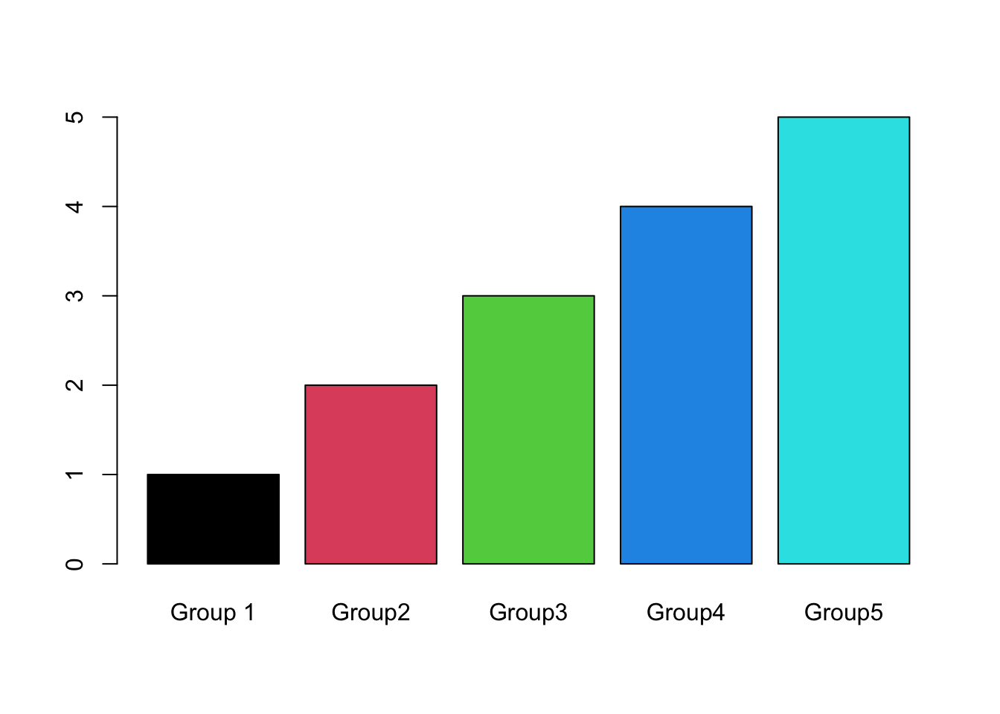
For histograms, we can also pass in a vector of data, R will construct the histogram for you.
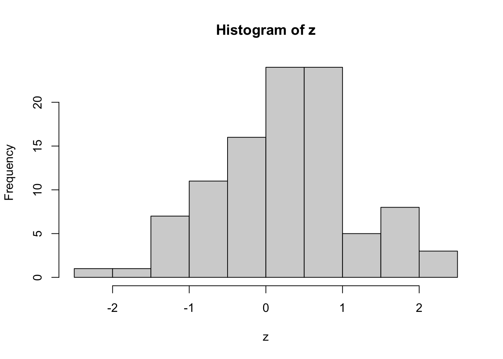
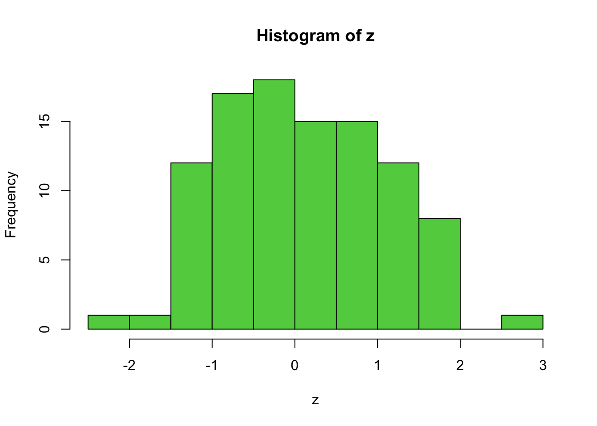
We can change the cut-points for the bins.
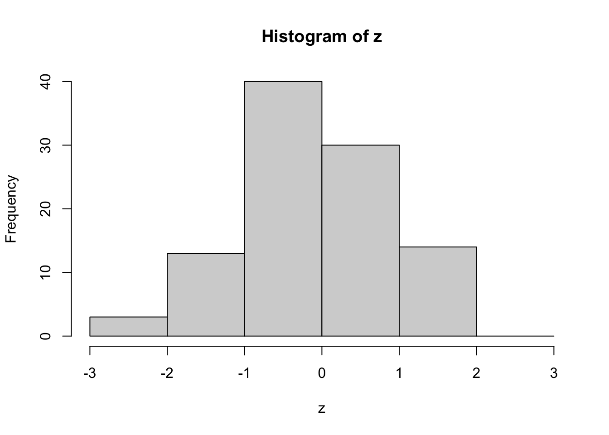
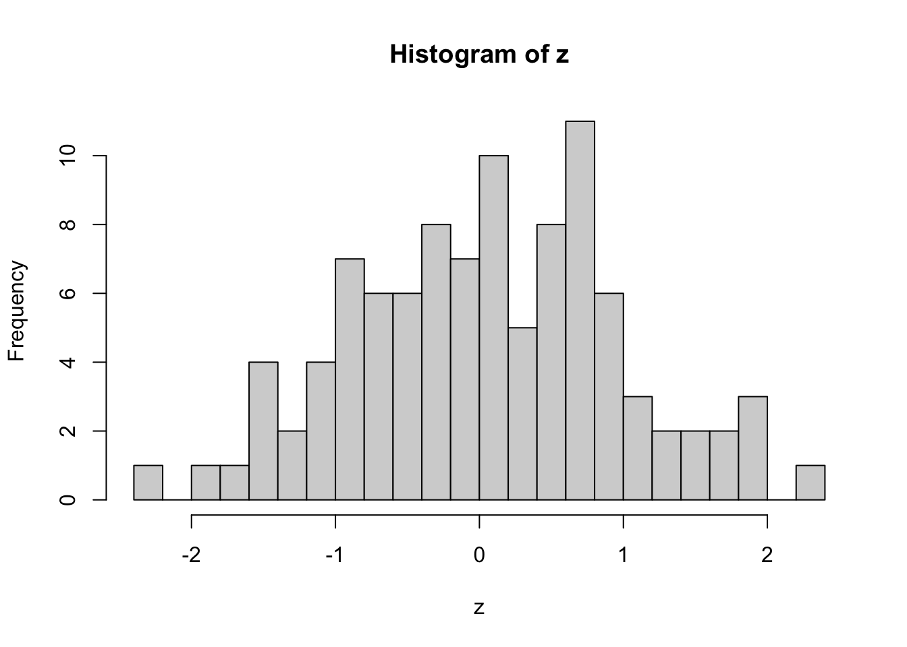
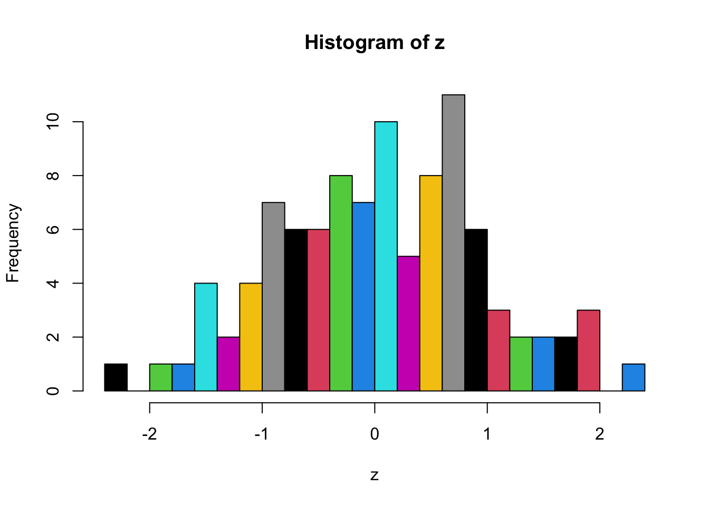
We can also put two histograms on top of each other by setting the add= argument to TRUE.
men <- rnorm(40,175,10)
women <- rnorm(40,145,12)
data <- c(men,women) # this will be used to set the limits.
hist(men,
col=2,
xlim=c(min(data)-5,max(data)+5),
xlab="Weight",main="Histograms for Men and Women"
)
hist(women,col=3,add=T) # note the addition of the add=TRUE argument.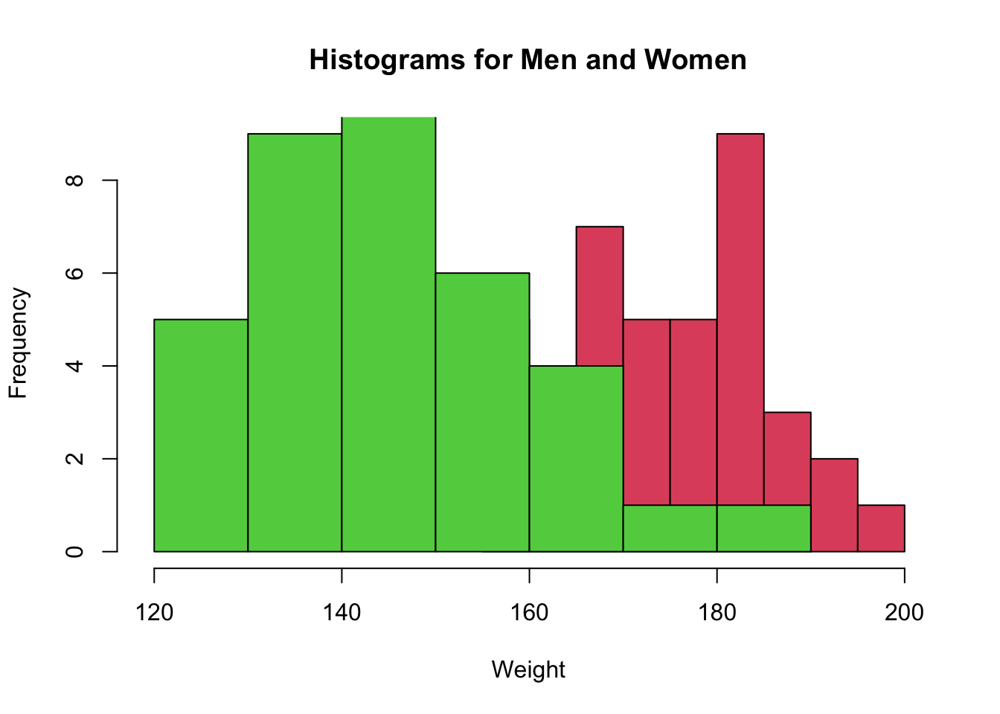
When a graphic function is called, such as plot(), a new window opens up. The default is to have one plot per window. This window, however, can be “partitioned” into multiple panes to include multiple plots with the par(mfrow=c(,)) function. Within the mfrow=c(,) portion we choose how many rows and columns of pictures you want in the pane. Here are some examples:
par(mfrow=c(1,1)) # the default.
par(mfrow=c(2,2)) # 2 rows, 2 columns, so 4 pictures.
par(mfrow=c(2,1)) # 2 rows, 1 column, so 2 pictures, top/bottom.
par(mfrow=c(1,2)) # 1 row, 2 columns, so 2 pictures, left/right.Let’s plot our two histograms together and then individual for each one.
men <- rnorm(40,175,10)
women <- rnorm(40,145,12)
data <- c(men,women)
par(mfrow=c(2,2))
hist(men,col=2,xlim=c(min(data)-5,max(data)+5),xlab="Weight",
main="Histograms for Men and Women")
hist(women,col=3,add=T)
hist(men,col=2,xlab="Weight",main="Histogram for Men")
hist(women,col=2,xlab="Weight",main="Histogram for Women")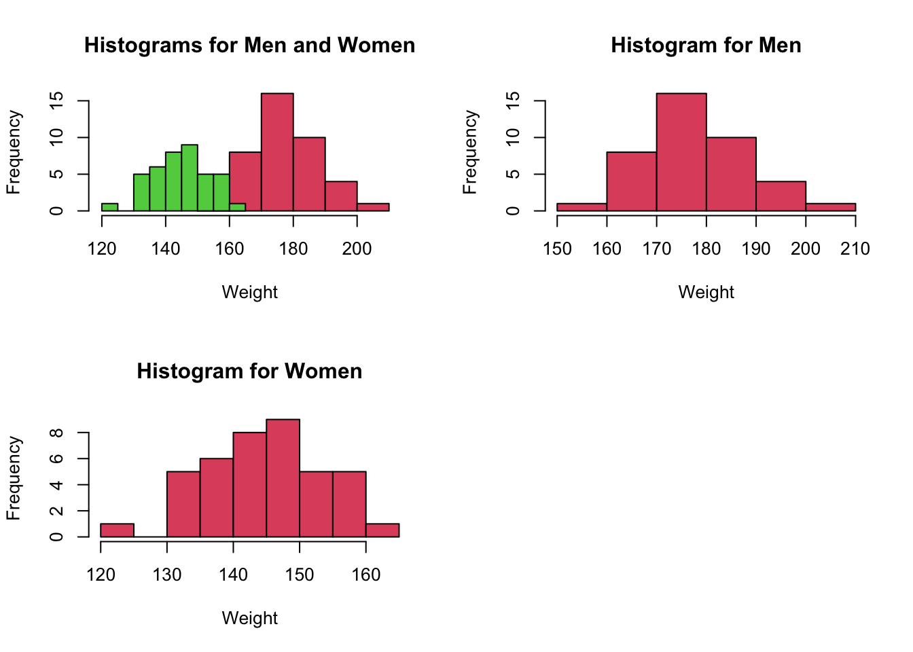
R allows you to export your graphic to a .pdf file. This is nice if you write a script for many plots and what a single .pdf file that has all the plots.
The structure of the function is:
pdf ("name.pdf") #where you name the file and add the file path if necessary.
plot() #the syntax to make the plots.
dev.off() #turn off the plotting device.For example, let’s make a few plots and then export them to a .pdf file.